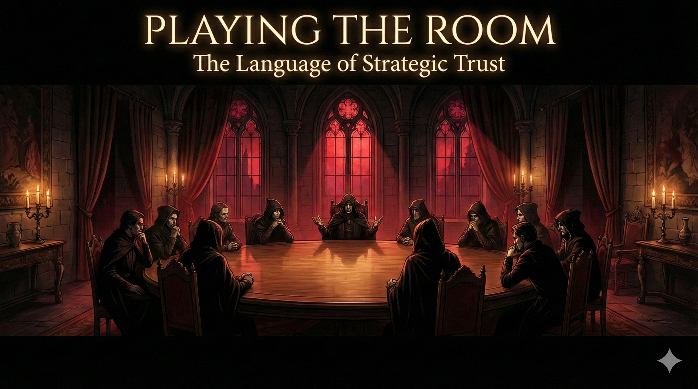
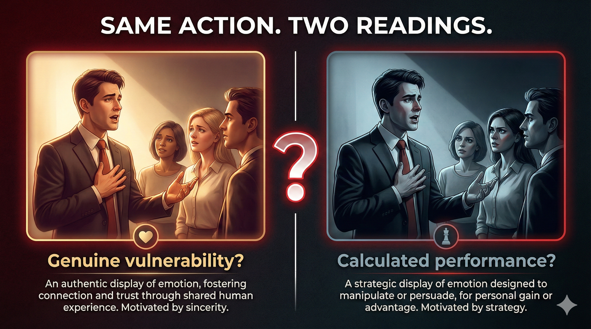
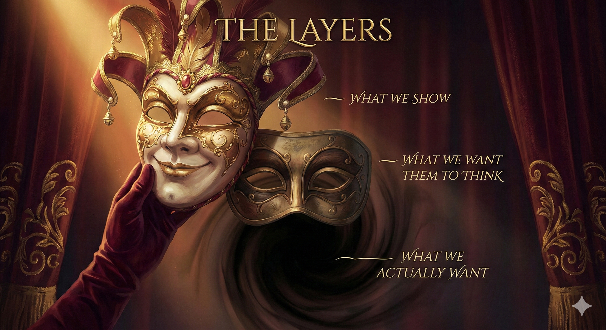

C1 AdvancedWhy are millions of people obsessed with watching strangers accuse each other of lying?
The Traitors has become one of the most-watched TV formats in the world. The premise is simple: players complete challenges to build a prize fund, but hidden among them are "traitors" who secretly eliminate the "faithful" each night.
But here's what makes it extraordinary: the roundtable. Every episode, players sit in a circle and try to identify who's lying. They share stories. They make eye contact. They perform sincerity. And someone goes home.
Research consistently shows humans are barely better than a coin flip at detecting deception. Yet we're convinced we can "read" people. The Traitors exploits this gap brilliantly.

Watch any roundtable and you'll see the same behaviour interpreted two ways. Someone shares an emotional story:
The action is identical. Only the interpretation changes.

Normally, we decode people by asking: "What do they want?" If I know your incentives, I can predict your behaviour.
The Traitors breaks this completely. You're in a room with people and you cannot know what game they're playing.
The Defender's Dilemma
Someone defends you passionately at the roundtable. Are they:
Both look exactly the same. Both feel exactly the same.
Is the roundtable actually unusual? Or do we just think we know everyone's incentives in real life?
The roundtable has developed its own language - phrases that let you say something without quite saying it. Click each expression to explore.
Express vague suspicion without providing specific evidence. Useful when you sense something is wrong but can't explain why.
I can't put my finger on it, but + [vague observation]
"I can't put my finger on it, but something about his reaction felt off."
"I can't put my finger on it, but she's been unusually quiet tonight."
Neutral to informal. Often used to test reactions without committing to an accusation.
Stress: can't PUT my FINger on it
Think of a colleague, politician, or public figure whose behaviour sometimes seems slightly off but you can't explain why. Use the expression to describe your intuition.
Offer an opinion while hedging - suggesting it might not matter or might be wrong. Creates distance from your own statement.
For what it's worth, + [opinion/observation]
"For what it's worth, I believed her when she said that."
"For what it's worth, I think we're looking in the wrong direction."
Versatile - works in both casual and professional settings. Often signals you're about to disagree with the group.
Stress: for what it's WORTH (often reduced to "f'what it's worth")
Imagine you're in a meeting where everyone seems to agree on something, but you have doubts. Use "for what it's worth" to gently introduce your different perspective.
The classic "performative denial" - you're about to point fingers while claiming you're not. Everyone knows it, but the phrase provides social cover.
I'm not pointing fingers, but + [accusation or observation about someone]
"I'm not pointing fingers, but James has been very quiet about where he was last night."
"I'm not pointing fingers, but someone in this room isn't telling the truth."
Often used sarcastically or self-awarely. The irony is usually acknowledged - you ARE pointing fingers.
Stress: not POINTing FINgers
Similar: "No offence, but..." / "I'm not being funny, but..."
Why do we have so many phrases that do the opposite of what they claim? Can you think of others? ("No offence, but...", "With all due respect...") What social function do they serve?
Express that something is inconsistent or suspicious without making a direct accusation. Points to logic rather than emotion.
That doesn't (quite) add up / Something doesn't add up (here)
"He says he was asleep, but his light was on. That doesn't quite add up."
"Something doesn't add up - why would she vote that way if she was innocent?"
Neutral, analytical tone. Appeals to reason rather than gut feeling. Often more damaging than emotional accusations.
Stress: doesn't ADD UP
Think of a news story, corporate announcement, or political statement that seemed suspicious. What specifically "didn't add up"?
Signal that you're about to take a risk by saying something unpopular or making a bold claim. Creates drama and positions you as brave.
I'm going to stick my neck out (here) + [risky statement]
"I'm going to stick my neck out here and say I think Sarah is telling the truth."
"I'm going to stick my neck out - I think we're all missing something obvious."
Dramatic, performative. Often used strategically to build trust or appear courageous. The metaphor comes from execution - putting your neck on the chopping block.
Stress: stick my NECK out
What's an unpopular opinion you hold about a current topic (technology, society, your industry)? Use the expression to introduce it.
Choose 2-3 cards to discuss with your teacher. Try to use the expressions from this lesson naturally in your answers.
In job interviews, we perform enthusiasm. On dates, we perform interest. In negotiations, we perform flexibility. Is this dishonest? Or is it just how social rituals work? Where's the line between presenting yourself well and being manipulative?
Research shows we're barely better than chance at detecting lies. Yet most people believe they're good at "reading" others. Why do we trust our intuition despite the evidence? Have you ever been completely wrong about someone?
Sharing personal stories builds trust. But if you share a story because it builds trust, is it still genuine? Politicians do this constantly. Influencers do this constantly. Has authenticity become just another strategy?
In The Traitors, you can't know what game someone is playing. But is real life that different? Do you always know your colleagues' true motivations? Your friends'? How do we function when we can't be certain of anyone's incentives?
"I'm not racist, but..." "No offence, but..." "I'm not pointing fingers, but..." Why do we have so many phrases that do the opposite of what they claim? What social function do they serve? Are they useful or just dishonest?
Maybe we're drawn to The Traitors because the roundtable isn't a game - it's a mirror. We watch it and think "I could spot the liar." But are we really watching to learn how to detect deception... or how to perform trust better ourselves?
Choose one of the challenges below. You'll have 3 minutes for extended speaking.
Set your timer:
The Traitors works because it reveals something uncomfortable: the strategies we use to build trust are the same strategies used to deceive. The roundtable isn't a game - it's every meeting room, every negotiation, every first date.
The difference between a traitor and a faithful player isn't their behaviour. It's their intentions. And intentions are invisible.
Next time you watch someone "being authentic," ask yourself: How do I know?
Watch a clip from any version of The Traitors (UK, US, Australian, or your country's version). Notice which of today's expressions appear - or close variations. Come prepared to discuss: who did you believe, and why?